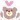

2015/0130Fri傷つけずには愛せない
みなさまこんばんわ！
日奈子だよー٩(◦`꒳´◦)۶♪
日奈子とまいちゅんは
何でも似ている
性格とか顔じゃないよ
なんでも、同じになるの！
自然と！
お披露目も
アンダーライブの原点である
牛久ライブも
他にもいっぱい。
真似っこされてるんだ
日奈子のブログね、友達がブックマークして見てくれてるんだって！
小学校の時の担任の先生も時間があるとき見てくれてるらしい♪
先日こんなメールが届いたの！

あちゃ～( ºΔº )笑
でもね、実は小学生の時も同じこと言われたの！笑
日奈子のブログ誤字脱字とか多いし
言いたいことを詰め込もうとして、「、」とか「。」が少なくて読みにくかったり、文がめちゃくちゃだったりで、
読みにくいブログなのに
毎回読んでくださり、コメントもたくさんきていてとっても嬉しいです！
毎回文字が多いブログとか、～がありました。っていうブログばかりじゃ
つまらないと思うから、今年はブログの使い方を工夫して見ようかな！と、思います！
っていっても、まだどうゆうブログ書いたりするか悩んでるけど。。。
みなさんはどんなブログが読みたいですか？何か意見があったら、教えてほしいです！よろしくお願いします！

格差社会コンビと
運命共同体
(運命共同体は、いま勝手に思いつきました。笑)
この間、まいちゅんかりんじゅんなとカラオケいったの！楽しかった！

お知らせです！今日発売の月刊エンタメさんの、
乃木坂46 U-18 友情対談というコーナーにあっしゅんとのインタビューが載っています！
私とあっしゅんのインタビュー
みなみおなのインタビュー
乃木坂の仲良し組がそれぞれいろいろな仲良しエピソードを話したよ！
お仕事で仲良しの話しを、聞いてもらえる。なんて楽しいんだ♡笑
初めて話した時とかのことも話したんだけど、正直本当にここまで仲良しになれると思ってなかったです！
今じゃ、あっしゅんは私の癒しであり、大事な相談相手であり、私のことを全部知ってくれてる数少ない人の中の一人です。
会って話すと、話したいことがどんどん溢れてきてずーっとしゃべりっぱなしです！メロンソーダがあれば何時間でもしゃべってられるよね！笑
しゃべってたい！
あっしゅんに、先輩でしょ～！って言った時にいやいや後輩だろっ！って返されるやりとりをよくやるんですけど、
その食い気味に突っ込んでくるあっしゅんが可愛くて面白いです。笑
はやく、お買い物いこうね♪あっしゅんが欲しいものは知ってるけれど、自分が何欲しかったか忘れちゃった( ºΔº )笑

よく、チップかあっしゅんどっちかちょうだい！って言われるけど、絶対絶対どっちもあげないんだからねっ！(｀・Д・´)がお
明日は握手会ですね♪10枚目の握手会も残り2会場となりました！
はやいですね。。。
乃木坂のイベントに追いつけない(´⊙ω⊙`)笑
これから、アルバムの特典とかもあってみなさんに会える機会が増えるからわくわく('∀`)♪
3周年ライブもあるし、風邪引かないよーに気をつけよう！
みなさんも気をつけてくださいっ！
卒業するために、今一生懸命学生に戻ってお勉強しています。。。笑
がんばります。。。。( ºΔº )
おやすみなさいっ！
2015/0126Mon僕のラブレター
みなさまおはようございます！
ひなこだよー٩(◦`꒳´◦)۶♪
朝からひげひな
一昨日はALL LIVE NIPPONでした！
1番最初にパフォーマンスさせて頂ける貴重な体験ができ、とても嬉しく楽しかったです！
そして乃木坂46のファンの方だけじゃなく共演したアーティストさん方のファンの方もいらっしゃったので、本番前までいつもとは違う緊張でいっぱいでしたが、ステージの袖で待っている時、乃木坂46！と紹介があると
わあー！と盛り上がってくださって
緊張がほぐれました！
たくさんの声援、サイリウム、うちわやタオルありがとうございました！
10枚目のアンダーメンバーだけで、ライブをするのが今日で最後ということで、終始泣きそうになって
もはや、始まる前のovertureで、泣いたけど始めの曲がおいシャンだったから、おいシャンに助けられたよ！笑
それから、
アルバムに収録されている
10枚目のアンダーライブメンバーで
歌った、「自由の彼方」
初披露しました！
どうだったかな？どうだったかな？
ダンスが、また難しく振り入れは
苦戦しましたが、かっこいいよね？！
自由の彼方おどるの楽しいの！
頭を振ったりするから、髪の毛わしゃ～ってなったりするんだけど、それがまた、ダンスやってるー！日奈子、ダンスやってるー！って気持ちになってテンションあがるの！笑
歌詞もすごく深くて、歌詞を見ながら自由の彼方聞くと、毎回涙出てきそうになるよ、
ダンスを踊っている時も、一番はしっこの2列目、3列目が多くて、上手側の人は結構見えると思います！
今度はいつ披露できるか、わからないけど、見れなかった方は楽しみにしていてください！
あと、いつもそうなんだけど
初披露の時って、どうやってのったらいいかわからないじゃないですか！
それで、ちょっと戸惑いながら
のって下さってる皆さんの姿が
愛おしく、ライブの時もそこをちょーっと楽しみにしていました♡笑
一昨日、久しぶりにLIVEをして
やっぱり楽しい！って思いました！
もっと、パフォーマンス力をあげたいです。
たくさんの人を惹きつけられるパフォーマンスができたらいいな！
3周年ライブに向けてがんばるぞー！
髪型はパフォーマンスの方では、

表面だけ巻いて、
エンディングのときは
ねこみみにしたよ♡
先日、前の学校の友達と
MAX Brennerに行ってきました！
おいひかった～(｡・・｡)♡
今度は、妹とお母さんといきたいな♡
ここで、ちょっとした
写真物語
(物語ではありませんが、
ノンフィクションです。)
楽屋での伊織とみり愛と日奈子
お？
はあっ！！！
ん？
あわわわわわわわ
伊織さんのこの顔すき。笑
あ！ちゃんと載せていいよって許可
もらってあるよ♡笑
そう！それから
みんなに秘密してることあるってメールで言ったのついに発表します♡
じつはー！！！！
新しい家族が増えました♡
ジャンガリアンハムスター2匹です♡
このこが毛がちょっと黄色っぽくて、
この子がちょっと毛が白っぽいの！
名前はまだ、決まってないから
決めたら報告するね♡
チップとも、仲良しなの♡
のぎ天で、文芸サークルの活動しました！
自分の声、嫌いだから、音読シーンの声気にしてやってたから、いつもより解消されてた気がする！笑
まひろさんが監督さんをしてくださり
いろいろなアドバイスを頂けたので、
いつもと違う私が見られたのじゃないかなー？とおもいます！笑

白ベレー帽お気に入り
それでは、またブログ書きます！
飛鳥ちゃんに言われた通り3行以上ブログに飛鳥ちゃんのことかくよ♡ほら、もう3行かけた♡おいシャンで、一緒につながること、もうしばらくは、ないと思うけど寂しくなんかないからねあっしゅん！がんばれー！！！私も追いつけるようにがんばるよー！また、はやく遊ぼうね(｡・・｡)話したいことたくさんあるんだっ♪メロンソーダ飲みながら、はなそう！パスケースにつけた"あいつ"離したらだめだよっ。
誰にもあっしゅんあげないー！
っていうポーズだからねっ！
そこんとこ、夜露死苦っっっ
(強い感じで言いたかった。)
2015/0123Fri夢中で探してきた
みなさまこんばんわ！
ひなこだよ٩(◦`꒳´◦)۶♪
今日は土曜日にある
オールナイトニッポンさんが主催の「ニッポン放送 LIVE EXPO TOKYO 2015 ALL NIGHT NIPPON Vol.3」
代々木第一体育館で開催されるLIVEのリハしてきたよ！
10枚目のアンダーライブメンバーで
ライブをするのはこれが最後になります。セカンドシーズンアンダーライブを一緒に乗り越えてきたメンバー！
ファイナルの有明コロシアムでアンダーライブをしめくくりましたが、
ニッポン放送さんのご好意で
出演させて頂けることなりました！
すっごくうれしいです♡
今日のリハでも
これで、本当にこのメンバーだけでライブをするのは最後なんだって
思ったらなんだかじーんっ。ときました。
1月24日 今週の土曜の16時30分開演されます！
まだ、チケットも購入できるので
ぜひ、見に来てください！
たくさんの方に見にきてもらえたら
嬉しいです♪
あの曲もやるので、お楽しみに♪
1部がなんだろう！こういう洋服！
ワンピースかな？
ワンピースの下にチェックのシャツきてるよ！
あと、お気に入りのふわふわのニット帽！この緑の色かわいい♡

あし、びょーん
と
ちょき！
それから、めがねもしたんだ～♪

えっへん٩(◦`꒳´◦)۶
2部が
31 Sons de modeのニット！
1枚で着たよ♪

髪の毛はおろし巻きに
編み込み三つ編みで
白いリボンのバレッタつけたよ！
3部が2部と同じ洋服で
髪の毛をまとめてお団子にしたよ！
大人っぽいかな？♪
それでね！偶然
ちはるさんおそろいだったの！
3部の握手会から帰ってきて
楽屋戻ったらちはるさんが
あ！ってなって、見たら
おそろいだった♡
うれしかったな～٩(◦`꒳´◦)۶♪
たまたま、同じ洋服！って今までになかったから初体験！！！

同い年のちはるさん♡

足、びょーーーーん
4部はタートルネックのニットに
ワンピース！
タートルネックのニットは、
31 Sons de modeで
ワンピースがお店が分からない。。。
でも、渋谷で買ったよ！

はーふついんてーる
この日がエクステ最後の日だった！
また、今度機会があれば気分転換につけたいな～♪
いろいろな髪型ができるロングはたのしいね♪
まだ、長い髪の毛の時の写真
いっぱいあるからまたのせます！！！
11枚目のシングルの個別握手会の日程も発表されました！
11枚目は各会場1部ずつ減ってしまい
関東が1部～3部で
地方の京都と名古屋が4.5部になりました！
一つ前のブログにも書きましたが、
各会場1部ずつ減ってしまったのは
レーンで皆さんを待っている私が一番わかっています。
部数が減ってしまったことは
皆さんと過ごせる楽しい時間が減ってしまい皆さんと触れ合える時が少なくなってしまったのが、私自身残念だし
皆さんに申し訳ないです。。。
また部数が増えるように
もっともっと頑張ります！
11枚目の握手会は、
なんか、いろいろやりたいな♪
あっしゅんと天使と悪魔やるっていってやってないしー
塩あいすでまたなにかやりたいしー！
制服とかいろいろやってみたいことあるの♪
握手会楽しみだな♡
残りの10枚目の握手会とよ スペシャル個別握手会も待ってるよ♪
あ！録音会とか撮影会とか他にもたくさんあるんだよね♪
いろいろ初めてだから、わくわく！
それでは、またブログ書きます！
つぎは、のぎ天のことかな？♡
ばいばーい٩(◦`꒳´◦)۶

だんだん、笑ってっちゃって
顔がぐしゃぐしゃ( ºΔº )！笑
2015/0119Mon長く助走をとる
みなさまこんばんわ！
北野日奈子です٩(◦`꒳´◦)۶！

昨日、放送された乃木どこで
11枚目の選抜発表がありました。
11枚目シングルも
アンダーメンバーとして頑張っていきます！
収録した日から暫くは
心の中が曇っていましたが
今はしっかりと前を向いています。
ファンの方のコメントを読んで
こういう気持ちになれました。
ありがとうございます。
もう変えられない今よりも過去の結果について、いつまでもくよくよしてないで、今からでも無限に変えられる未来のために前を向いて笑顔で頑張ります！
前よりも、自分のポジションや現状についてちゃんと考えられるようになりました。
握手会では、レーンの中で1人ぼっちでいる時間の方がまだ長いし
ブログのコメントも周りのメンバーと比べるとまだまだです。
だけど、皆さんが応援してくださり
1番遠くの列にいる私でも
見つけて微笑んでくれるので
私は頑張ってこれました。
前のブログでも、言いましたが
この1年は私にとって勝負の1年だと思っています。
人生の中で1番努力ができ
1番成長できた1年になるように
エンジン全開で私らしく
頑張っていきます！！！
他の人と比べると
自分には足りてないことが多すぎて
そんな自分に嫌気がさし
何もかもわからなくることや
へこんで私らしくいられないことも
あると思いますが
見捨てないでいてほしいです。
私が乗り越えなきゃいけない壁があとどのくらいあるのか分からないし、
すぐ目の前の見えている壁も乗り越えることができなくて、苦しい現状ですが
必ずぶっこわして次の壁もその次の壁も乗り越えられるように全力で頑張っていきます！！！
そうだ！今年は日奈子気合いの入り方が違うんだぞ٩(◦`꒳´◦)۶
恐れず何事にも全力で挑戦していくぞ！
得体の知れない少女になる٩(◦`꒳´◦)۶♪笑
11枚目もよろしくお願いします！
それから、伊織、まりかさん、あっしゅん！
選抜おめでとうございます！
まりかさんとあっしゅんの存在は
アンダーにとってもそれから私にとってもとても大きな存在です。
個人的に一緒に活動をすることができなくて、すっごくすっごくすっごーく
寂しいですが、まりかさんとあっしゅんが選抜に選ばれて嬉しい気持ちの方が強いです！！！
まりかさん！いたずらばかりで生意気な私を全力で受け止めてくれて優しくしてくださりありがとうございます！
まりかさん、だいすきです♡

へへへ♡おそろい♡
あっしゅん！浮気したら怒るから٩(๑`^´๑)۶らぶぱらだいす♡
伊織！不安でいっぱいだと思うけど、伊織らしく選抜メンバーとして頑張ってね！アンダーライブの前に一緒に自主練したのが懐かしく感じる(｡ρω-｡)
あの時、私がダンス教えてたのが
今は恥ずかしく思います。。。笑
また、鼻噛ませてね♡
いつまでも、日奈子に甘々な伊織でいてね♡だいすき♡

そう！それから
エクステを外してもとの
ぼぶひなに戻りました！

落ち着く。。。
また、いつかエクステつけたいな～♪
握手会については、次のブログで書きます！
それでは、おやすみなさいっ！
2015/0110Sat情熱を灯しては
みなさまこんにちわ！
ひなこだよー٩(◦`꒳´◦)۶♪

新年あけましておめでとうございます！
今年もよろしくお願い致します！
2015年一番最初のブログだから
一番最初に今年の抱負♪
小さくまとまらない！
現状に満足しない！
こんな感じです！笑
小さくまとまらないは、
たくさんの人の前に出るとどうしても小さくなってしまうので、そこを直して
乃木坂に加入して3年目の年なので、もう少し堂々としていけたらなと思います！
日奈子にしかない色を見つけて
この1年はその色で自分らしさを
表現していきたいと思います！
現状に満足しないは、
今のアンダーメンバーの位置に慣れてはいけないと思い抱負にしました！
前よりも活動が増えたアンダー活動の中で、のぎ天はほぼ毎週出させて頂けていて、アンダーライブもすごく素敵なものでやっていてとても楽しいし、居心地がとてもよく安心します！
今はまだ、アンダーで色々勉強したいとか、アンダーライブはパフォーマンス力がつくからアンダーライブがあるアンダーメンバーにいたい。と、
そう思っていましたが、
そういう気持ちがあったのは現実から逃げていた部分もありました。
2015年のこの1年は高校も卒業して
乃木坂の活動以外何もないので
100パーセントで活動に取り組めます！
そういう所も含め色々と
今年は自分にとって勝負の年です！
だから、もっとたくさん努力をして
乃木坂のメンバーとして皆さんに認めて頂けるように自分の置かれている立場に満足せず、言い訳せず、
自分にしかできないことを探して
もっとたくさんの方に私を知ってほしいです。
自分自身が変わらなきゃ今の自分から変われないから、成長できないから
今年は自分に負けないように頑張ります！
これからも、皆さんにたくさん
心配や迷惑をかけてしまうと思いますが、温かい目で見てもらえたら嬉しいです。。。( ºΔº )♡
あっ！でも、時には厳しく
皆さんからみた私のダメな所とかを、
教えて頂けたらなと思います！
巫女さんひなさん
今年も1日の朝方に家を出て
家族みんなで初詣にいきました♪
神社の鹿さんまた喧嘩してたよー( ºΔº )！
今年のおみくじ1回目は
鹿おみくじで、小吉でした！
悔しかったから普通のおみくじ引いたら、凶で心臓が止まりました。笑
凶のまま終わらせてはならん！と思い、
もう一度引いたら大吉♪
まいちゅんいわく、今年は何度もおみくじ引いていい年なんだって！
だから、ちょうどよかった♪
神社の中にあるお店でご飯食べて
帰りに出店で売ってる大きいわたあめ買ったの♪
わたあめ機器がほしくなった。
それから、6日にも乃木坂メンバー皆んなで乃木神社に初詣行ったよ♪
皆さんの絵馬みてきました♡
がんばろう！ってやる気がでました！
いつもありがとうございます！
乃木神社のあとは、今年最初のお仕事の
アルバムのお渡し会がありました！
私は、若月さん高山さんらりんさんと同じよどばしカメラチームでした♪
法被！
髪型は未年だからひつじへあー♪
はみがきちゅー♪
きめぽーず♪
アルバムに収録されている新曲の中で
10枚目のアンダーライブをつくりあげてきた10枚目アンダーメンバーと研究生の曲を歌っています♪
自由の彼方
聞いてください♪
はやく、お披露目したいな♪
間奏ダンスに注目です♪
12月お誕生日の方！
半分の方をまだ載せていませんでした。
遅くなりすみません。。。
お誕生日おめでとうございます！


1月お誕生日の方、このブログにコメントお願いします！
むむむっ

ゔぅーーーーー
へへへへへへへ♪
次のブログはのぎてんのことなど書きます♪
あ！髪の毛はまだ長いです！